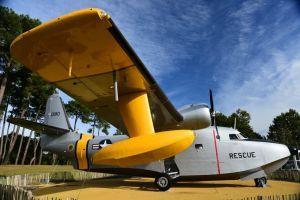

MUSEO MUNICIPAL de SANGUINET
Sanguinet es una comuna tocando ya Arcachon (conocida capital de las ostras) y en esta comuna de más de 4000 habitantes, existe un museo del Lago, donde podemos hacer
un recorrido histórico desde la edad de bronce hasta nuestros días. Tambien existe, saliendo desde la oficina de Turismo, un recorrido de 4 kms por el patrimonio
de la comuna y finalmente, en el mes de julio se celebra el festival de Jazz.
VER MÁS

Biscarrosse es una importante comuna de las Landas, muy cerca de la Duna de Pylat (que aunque no este en las Landas, si que recomiendo su visita). Esta comuna es conocido por
tener una base de hidroaviones y se pueden ver sobre volar los cielos. Existe un museo de la Hidroaviación, que está situado en el emplazamiento de la mítica antigua base
Latécoère haciendo delicia de los amantes de los aparatos de dos alas. En el centro de la ciudad, existe también la Galerie de l’Orme, una galeria abierta a que artistas locales
muestren sus obras en diversos campos artísticos.
MUSEO de la HIDROAVIACIÓN de BISCARROSSE
Biscarrosse es una importante comuna de las Landas, muy cerca de la Duna de Pylat (que aunque no este en las Landas, si que recomiendo su visita). Esta comuna es conocido por
tener una base de hidroaviones y se pueden ver sobre volar los cielos. Existe un museo de la Hidroaviación, que está situado en el emplazamiento de la mítica antigua base
Latécoère haciendo delicia de los amantes de los aparatos de dos alas. En el centro de la ciudad, existe también la Galerie de l’Orme, una galeria abierta a que artistas locales
muestren sus obras en diversos campos artísticos.
VER MÁS